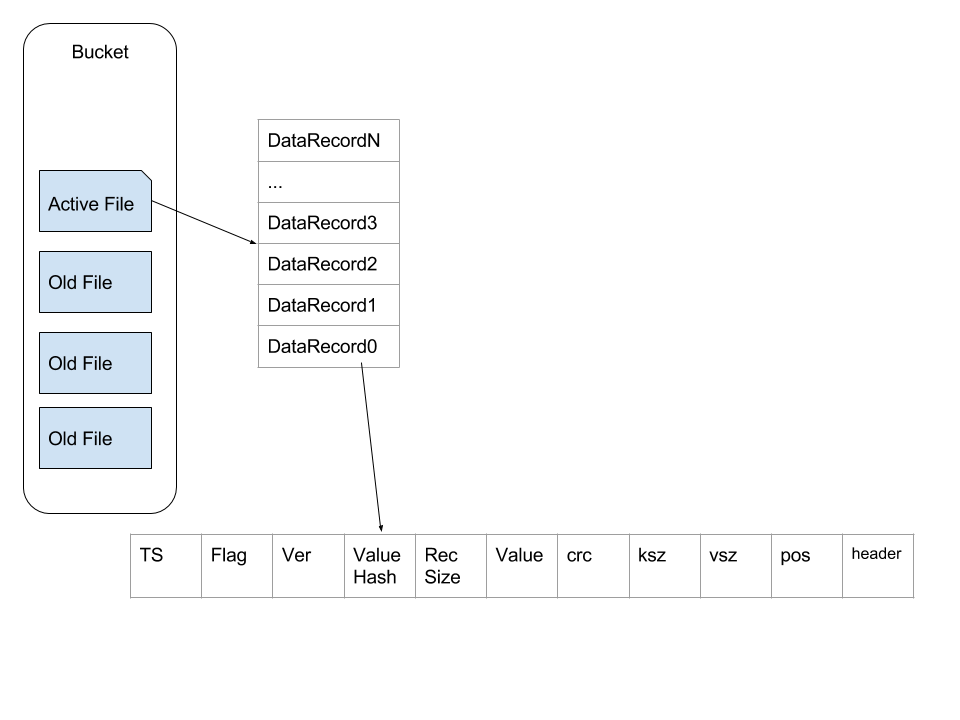

GoBeansDB 架构设计(1)
从产品转系统有一段时间了，转到核心系统之后一直在维护 GoBeansDB，最近也在慢慢的熟悉另外一个新的项目（暂时保密）。
BeansDB 是豆瓣内部实现的分布式存储系统，最开始的时候是 Davies 用 C 来实现的。2015 年的时候，内部决定开始用 Go 来重新写 BeansDB，然后 xiufeng 与 zzl 就实现了现在的 GoBeansDB。
为什么要自己实现一套 k/v 存储¶
我在刚刚接手 GoBeansDB 的时候，想过这个问题。既然有那么多优秀的数据库系统，为什么豆瓣还需要自己重新实现一套 k/v 存储？ 这个问题可以拆分成两个方面，一个是为什么要用 K/V 数据库。一个是为什么要自己造轮子。
- 首先是因为数据大，而且数据是非结构化数据，像豆瓣的日记，就是一批很长的字符串。
- 其次是非常多的随机读。
- 有的时候会有大量的写操作
- 不需要外键什么的
上面四点可以排除掉类似 MySQL 这种传统的关系型数据库。
排除掉传统的关系行数据库之后，就需要对比现存的 K/V 数据库。
现在比较流行的 K/V 数据库有 LevelDB ， MongoDB ，还有 Cassandra ，现在看来这些项目都足够成熟。但是如果追溯到 BeansDB 项目最开始的时候，也就是 2012 年的时候，那个时间点并没有太好的选择。即使现在看来，除了 Cassandra 之外，像 LevelDB， MongoDB 也不能满足我们的目标：
- 读写都需要比较低的 latency
- 数据量非常大，所以数据要写在磁盘上，数据库需要能够容纳比内存大的多的数据
- 高可用，单点故障不影响系统正常运行
- 高吞吐，尤其是针对写操作
- 能够快速恢复有问题的节点
这 5 点也可以排除调 MongoDB 与 LevelDB 。
当然上面这些都是我做的推断，但是这些应该都不是最主要的原因。最主要的原因应该是豆瓣的工程师文化比较好，鼓励工程师去寻找一个最贴合业务的解决方案，并且这个工程师的团队还足够强，两者缺一不可。如果没有很强的工程师文化，可能会直接引入开源的解决方案，虽然不一定合适，但是应该足够解决痛点。如果工程师实力不够，也就没有能力去自己实现一套类似的系统。而且与其去引入一个复杂的，自己无法完全掌控的开源项目，不如自己实现一套贴合业务的，简单的系统。这样内部可以根据业务的需要来作调整，同时自己实现一个系统也比完全掌握一个庞大的开源项目要简单。一旦出现问题也比较容易找到问题所在。
为什么要用 Go 重新实现 BeansDB¶
BeansDB 是用 C 来实现的，为什么现在改用 Go 来实现？
一个很重要的原因是 Go 的代码相比与 C 更容易维护。对一个工程师而言，Go 的学习成本比 C 要低很多。
还有 Go 的标准库也足够完善，不需要用 C 来重复造轮子。而且 BeansDB 的瓶颈是 IOPS，Go 的执行效率虽然比 C 差，但是也不会成为瓶颈。
GoBeansDB 的架构设计¶
GoBeansDB 是基于 Dynamo 与 Bitcask 两篇论文来做的实现，这里优先讨论基于 Bitcask 实现的存储引擎。Bitcask 有一个缺点在于所有的 key 值都必须放在内存里面，GoBeansDB 这这个基础之上做了一些优化，绕过了 Bitcask 这个痛点。
GobeansDB 的存储有有两个比较重要的组成部分，一个是索引(htree)，一个是数据文件(data)。索引与数据文件组成 Bucket。Bucket 的概念类似与关系行数据库里面的 table，在 GoBeansDB 的实现中就是给一个 Bucket 分配一个文件夹，这个文件夹下面放着相关的数据。每个 Bucket 下面一次只允许打开一个文件。打开的这个文件会一直保持打开的状态，一直等到追加到活跃文件超出阈值。文件超出阈值之后就关闭，然后新建一个新的继续添加。data 文件一旦关闭之后，文件就转换成为不活跃的数据文件。无法再往这个 data 文件上面追加数据。
状态为 active 的数据文件只做追加操作，这样连续的写入操作也不会明显增加磁盘的 IO 使用量。这种设计也极大的简化了数据的写入操作。
上面的图简单描述了 Bucket 内部文件的架构，每条数据里面包含TS（TimeStamp）,Flag，Ver（Version），ValueHash，RecSize（单条记录的主要内容的大小）,Value，crc（key，value，header 的 crc），ksz（Key Size）,vsz（Value Size）,pos（Position，这条记录在文件中的位置）,Header。
当插入新数据的时候，直接在文件尾部添加这种结构的数据。删除操作是对原有的数据做更新操作，并将 Ver 绝对值+1，转变为负数。
在文件写入完成之后，需要更新内存里面的数据结构，也就是前面提到的 HTree，HTree 是一个 Hash Tree，结构如下
levels 表示真是的树状结构， leafs 是树的叶子，保存着真实的数据。

这种数据结构下读取一个值也非常简单，大多数情况下最多只需要一次 seek 。我们首先在 Htree 中通过 levels 找到 key 对应的 leafs ， 然后通过 leafs 里面的报错的 Pos 来拿到文件编号（chunkID）以及 offset，这样就可以通过文件编号（chunkID）和 offset 来拿到保存的数据。在很多情况下文件系统的缓存会让这个读操作比预期的要快。
到这里关于 GoBeansDB wirte/delete/read 相关的操作都已经基本完成。但是仅仅这样还不能完备。
GC 操作¶
GoBeansDB 的模型非常简单，write/delete 操作都是在文件尾部追加新的数据，这样存在一个问题就是占用的磁盘空间比真实的数据要多。所以我们引入了 GC 机制来回收垃圾，释放内存与磁盘空间。在 GoBeansDB 中，可以通过配置文件来设置只回收 N 天之前的数据，比如一个周之内的数据我们认为还会有改动或者其他操作，先保留一段时间。同时我们引入增量 GC 的机制，之前做过 GC 操作的数据，则认为不需要进行第二次 GC。
GC 的过程是将 datafile 里面已经过时的数据清除掉，比如旧版本的value，已经删除掉的key。